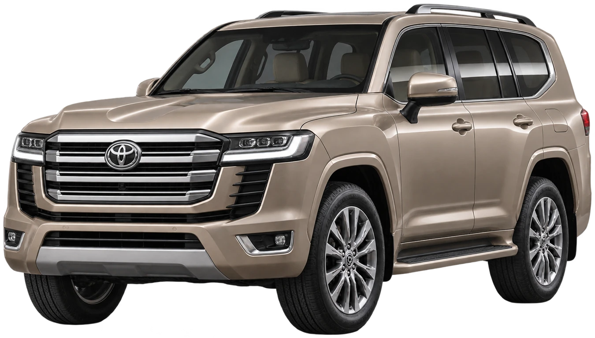

Рыночная спецификация
Уточним происхождение автомобиля и комплектацию. Для эксплуатации в России заранее сверим подогревы, климатическое оборудование и сервисные особенности.

Направления импорта
Подбор автомобиля в Эмиратах с учётом региональной спецификации. Обсудим комплектацию, документы, экспорт и доставку до передачи автомобиля.
Уточним происхождение автомобиля и комплектацию. Для эксплуатации в России заранее сверим подогревы, климатическое оборудование и сервисные особенности.
Проверим сведения продавца и доступное состояние кузова и техники. Экспортные документы обсудим для конкретного варианта.
После согласования покупки подготовим маршрут и предварительные расходы на доставку и оформление.